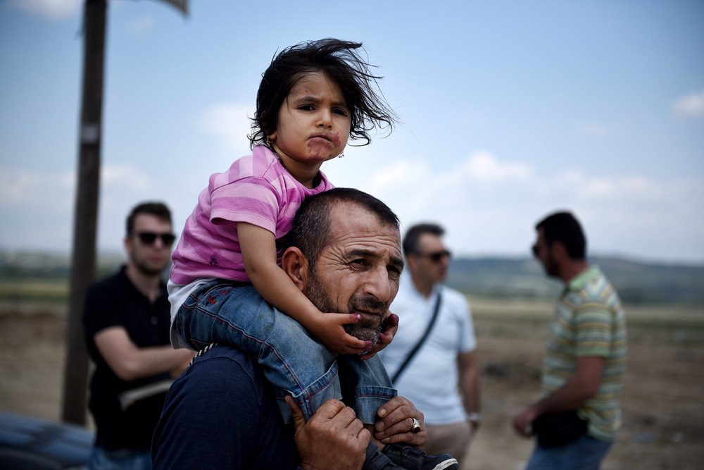
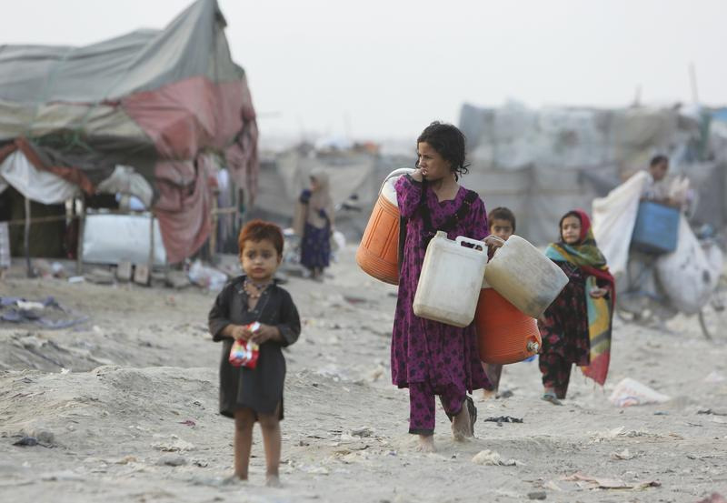
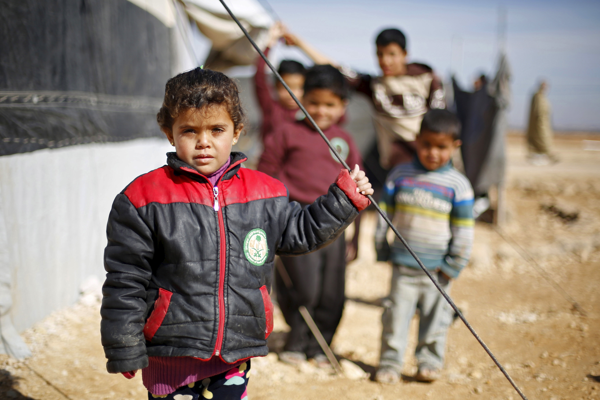

On Wednesday, the United Nations Deputy High Commissioner for Refugees, Kelly Clements, called on the private sector for backup. As the 74th U.N. General Assembly continues to meet throughout the week, the need to fill gaps in climate action continues to take center stage.
The meteorological impact of climate change can be divided into two distinct driv- ers of migration; climate processes such as sea-level rise, salinization of agricultural land, desertification and growing water scarcity, and climate events such as flooding, storms and glacial lake outburst floods. But non-climate drivers, such as government policy, population growth and community-level resilience to natural disaster, are also important. All contribute to the degree of vulnerability people experience.
The problem is one of time (the speed of change) and scale (the number of people it will affect). But the simplistic image of a coastal farmer being forced to pack up and move to a rich country is not typical. On the contrary, as is already the case with political refugees, it is likely that the burden of providing for climate migrants will be borne by the poorest countries—those least responsible for emissions of greenhouse gases. Temporary migration as an adaptive response to climate stress is already apparent in many areas. But the picture is nuanced; the ability to migrate is a function of mobility and resources (both financial and social). In other words, the people most vulnerable to climate change are not necessarily the ones most likely to migrate.
Predicting future flows of climate migrants is complex; stymied by a lack of baseline data, distorted by population growth and reliant on the evolution of climate change as well as the quantity of future emissions. Nonetheless this paper sets out three broad scenarios, based on differing emissions forecasts, for what we might expect. These range from the best case scenario where serious emissions reduction takes place and a “Marshall Plan” for adaptation is put in place, to the “business as usual” scenario where the large-scale migration foreseen by the most gloomy analysis comes true, or is exceeded.
Most Detrimental to Climate (listed highest to lowest)
- Live stock famring
- Emissions
- Toxic waste
As early as 1990 the Intergovernmental Panel on Climate Change (IPCC) noted that the greatest single impact of climate change might be on human migration—with millions of people displaced by shoreline erosion, coastal flooding and agricultural disruption.� Since then, successive reports have argued that environmental degradation, and in particular climate change, is poised to become a major driver of population displacement—a crisis in the making.
In the mid-1990s, it was widely reported that up to 25 million people had been forced from their homes and off their land by a range of serious environmental pres- sures including pollution, land degradation, droughts and natural disasters. At the time it was declared that these “environmental refugees”, as they were called (see Box 1), exceeded all documented refugees from war and political persecution put together.4
The 2001 World Disasters Report of the Red Cross and Red Crescent Societies repeated the estimate of 25 million current “environmental refugees”. And in October 2005 the UN University’s Institute for Environment and Human Security warned that the international community should prepare for 50 million environmental refugees by 2010.5



This section explores the ratio of toxic waste export in comparison to the estimated trees that cover earth's surface. Thus calculating air quality can be achieved based on inputs and outputs of clean and unclean air. Oxygen accounts for a lesser percetantage ration than what is known to in chemical waste in regards to what is humanily created. Thus in order to balance out for cleaner air quality, it is crucial to increase the trees that cover the earth's surface. The latter would obtain appropriate oxygen levels essential to human life. The increase of trees in a number of areas affects the radius by 100 meters into surrounding areas. Thus changing air quality within that same radius. Balancing out any effects derived from humn made waste and toxins that could be detrimental to humn health and nature. Thus in the long-term higher benefits are dervied from increase air quality for a better atmostphere. In height air quality radius rises to the atmostphere and cancels out green house gases that could essential affect ozon layer qiality and thus repair ozon in the longer term.